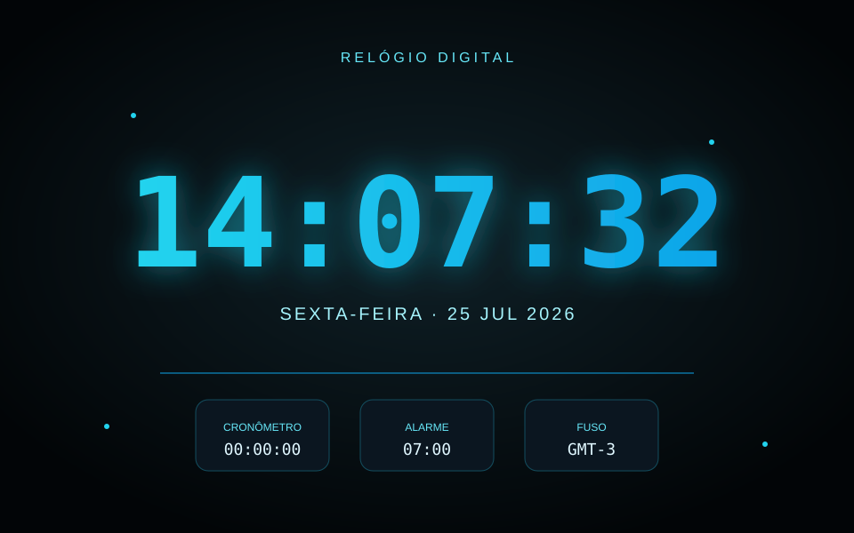

Projeto no GitHub
Relógio Digital
Relógio digital que roda direto no navegador, exibindo horas, data e recursos auxiliares como cronômetro e alarme.

Sobre o projeto
Um relógio digital estilizado, atualizado em tempo real, com data por extenso e um painel com cronômetro, alarme e fuso horário — pensado como exercício de manipulação de data/hora em JavaScript.
O que foi praticado
Uso do objeto Date, atualização de interface com setInterval, formatação de horário e construção de um layout com estética neon/tecnológica em CSS.